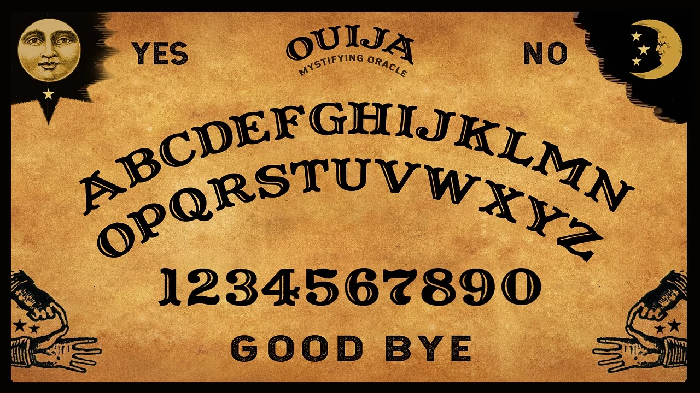

La Leyenda del Tablero
En el año 1994, este mismo instituto albergaba una sesión espiritista clandestina. Nunca debieron jugar con lo desconocido.
La plancheta comenzó a moverse sola, señalando una y otra vez las mismas letras...

Se dice que el espíritu de Aline sigue atrapado entre estas paredes de ladrillo (última vez vista el 31 de octubre de 1994).
Normas para Sobrevivir al Túnel
- Reglas generales para el equipo de ambientación:
- No tocar a los visitantes bajo ningún concepto.
- Mantener el volumen adecuado (terrorífico pero no dañino).
- Si alguien dice la palabra de seguridad "CALABAZA", se enciende la luz inmediatamente.
- Pasos obligatorios en la mesa:
- Localizar la pista oculta en el tablero interactivo.
- Pasar al ordenador de 2.º (JavaFX) para deletrear el código con la plancheta.
Recuerda siempre la advertencia del vigilante: todo es una broma nada es lo que parece.
Sesión de Invocación (Tablero Interactivo)
Observa con atención cómo reacciona el tablero al canalizar la energía del visitante.
A B C D E F G H I J K L M N Ñ O P Q R S T U V W X Y Z
1 2 3 4 5 6 7 8 9 0
✨ La plancheta se ha detenido bruscamente en el código: OUIJA-94 ✨
🔍 Inspeccionar el reverso del tablero (Pista oculta adicional)
La clave secreta acordada con 2.º para el sistema JavaFX es: OUIJA-94
Documento Secreto del Archivo
El siguiente documento muestra los registros antiguos de la sala: